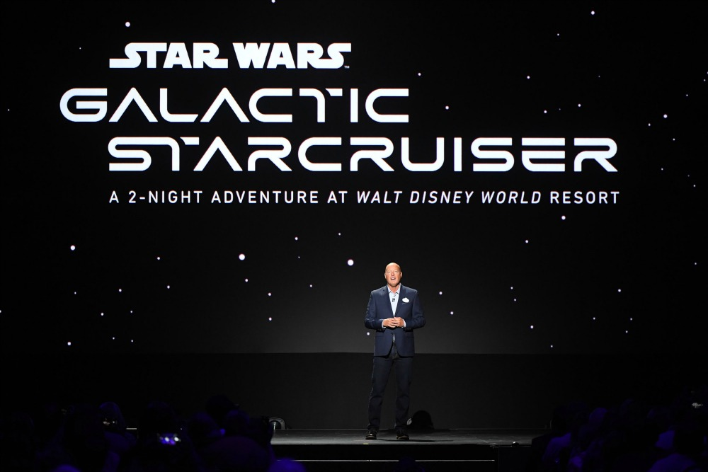

Galaxy's Edge. Brand governance at $2 billion scale.
Announced by Bob Iger at D23 in 2015 and built over nearly five years, Star Wars: Galaxy's Edge opened as a $2 billion world across two parks. Someone had to make sure every surface of it, on both coasts, felt like one galaxy. That was the job.

The hardest brand system in entertainment
Star Wars has the most exacting audience in popular culture, and Galaxy's Edge put the brand into physical, walkable form. Directing the creative vision meant approving every creative expression of the land, across two resorts, dozens of vendors, and every channel from park signage to global media.
At that scale, taste doesn't travel by approval meetings. It travels by system. So the centerpiece of the work was authored personally: the global style guide, covering identity, key art from concept to final, and a dedicated photography style guide, so that every hand touching the brand produced the same galaxy.


Activation at planetary scale
The launch work ran from global OOH direction to immersive airport takeovers in Los Angeles and Miami, arrival experiences that started the story before guests reached the gates. And it pushed into genuinely new territory: the world's first hologram Snapchat lens, letting guests transmit their own holograms from inside Galaxy's Edge, Star Wars technology made real in their hands.
Naming a starship
The land's second act was Star Wars: Galactic Starcruiser, the first-ever two-day fully immersive experience. The work here went beyond direction: naming the experience itself and leading the design direction of its identity, which was presented publicly by Disney CEO Bob Chapek.
What this case seeded is visible in everything after it: the conviction that a brand at scale is a governed system, not a collection of approvals. That instinct became the Brand Systems lane of the Podimo mandate.
